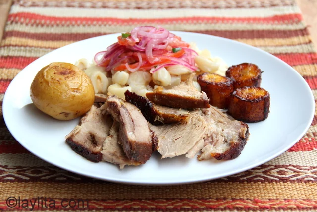
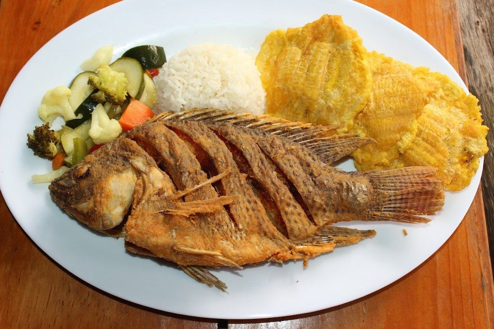
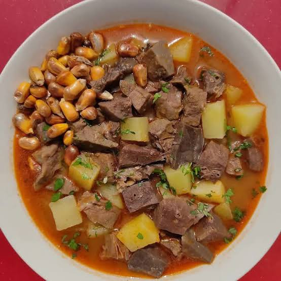
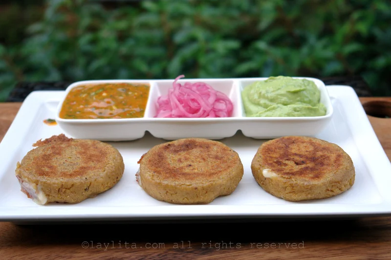
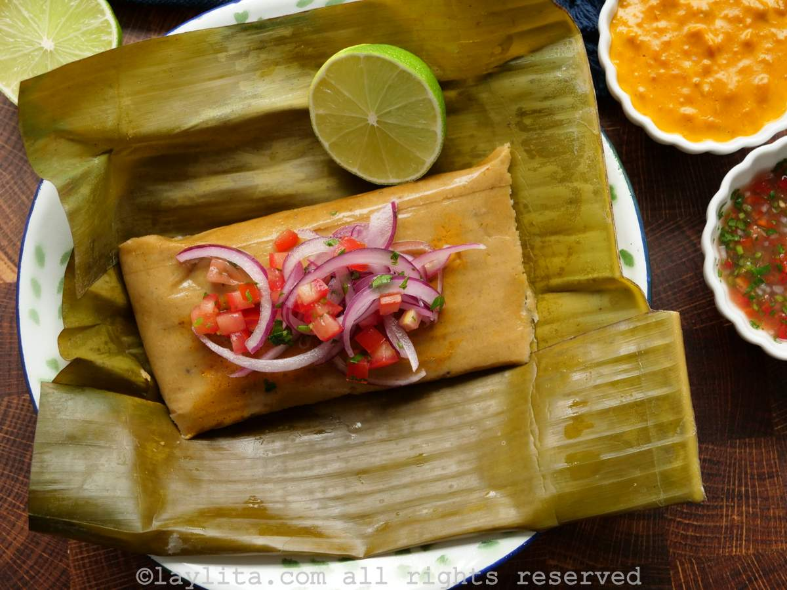
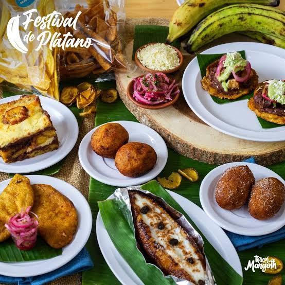

1. Breve descripcion del cantón
Baba es uno de los cantones de la provincia de Los Rios, en la region costa del ECuador, se caracteriza por sus tradiciones montubias, sus actividades agricolas y la importancia de la vida rural en sus comunidades,
Su identidad cultural esta relacionada con las costumbres campesinas, la produccion agricola y las celebraciones tradicionales de sus habitantes.
2. Parroquias
El canton Baba tiene como parroquias rurales a Guare e Isla de Bejucal, ademas de su cabecera cantonal.
- Baba, cabecera cantonal.
- Guare.
- Isla de Bejucal.
3. Platos de comida tipicos
La gastronomia de Baba esta relacionada con los productos agricolas y las costumbres culinarias de la region costa.
- Hornado a leña.
- Tripita.
- Bofe.
- Tortillas variadas.
- Bollos.
- Preparaciones a base de platano verde.






4. Lugares turisticas
Centro de Baba
Permite conocer la vida cotidiana del canton, sus espacios publicos y sus actividades comerciales.
Comunidades rurales
Sus entornos agricolas permiten conocer las tradiciones montubias y las actividades productivas locales.
Entornos naturales
Los paisajes rurales y los cuerpos de agua de la zona pueden ser de interes para quienes desean conocer el entorno natural del canton.
Nota: verifica los nombres, la ubicacion y el acceso a los atractivos antes de presentar esta informacion.
5. Hoteles donde alojarse
Para encontrar alojamiento, se recomienda consultar establecimiento disponibles en Baba y en ciudades cercanas de la provincia.
Antes de viajar, verificar el nombre del establecimiento, sus servicios, su ubicacion y sus precios.
6. Alcalde
Jael Melo Olvera
Alcalde del canton: consulta el nombre vigente en el sitio oficial del Gobierno Autonomo Descentralizado Municipal de Baba.
7. Poblacion
Para completar este apartado, utiliza la cifra oficial del ultimo censo y especifica el año al que corresponde.